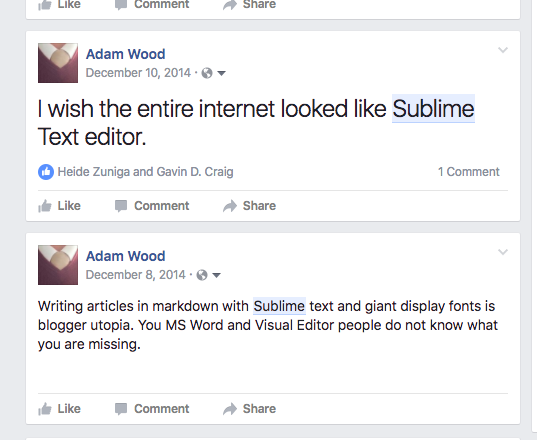
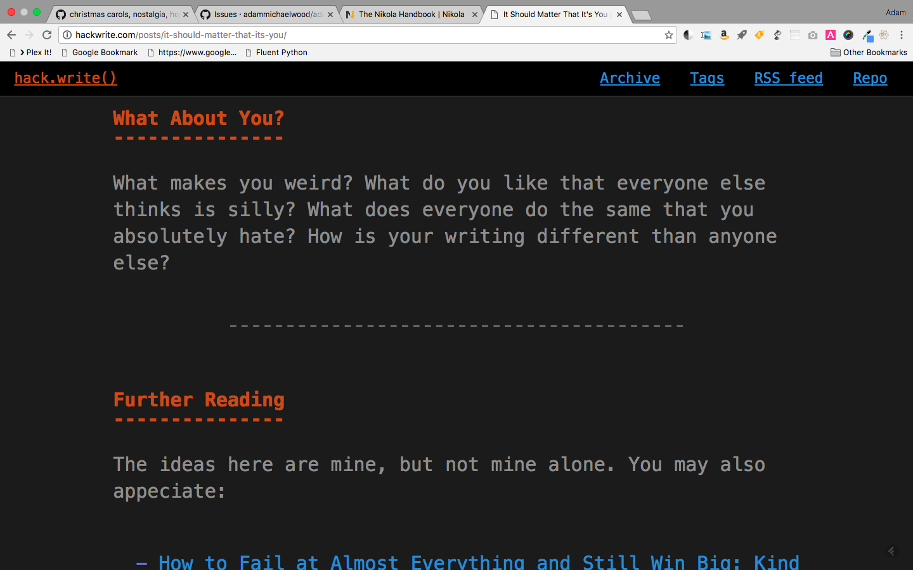
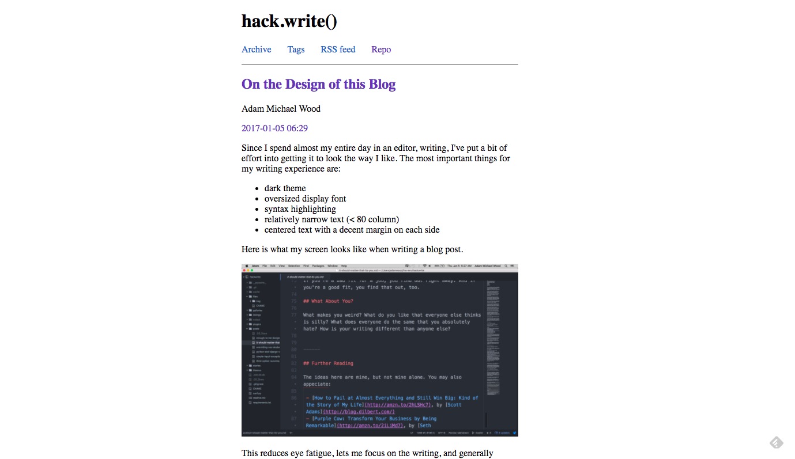

On the Design of this Blog
Since I spend almost my entire day in an editor, writing, I've put a bit of effort into getting it to look the way I like. The most important things for my writing experience are:
- dark theme
- oversized display font
- syntax highlighting
- relatively narrow text (< 80 column)
- centered text with a decent margin on each side
Here is what my screen looks like when writing a blog post.

This reduces eye fatigue, lets me focus on the writing, and generally speeds me up while making me happier. It doesn't hurt that my non-tech friends see this screen and think I'm some kind of mad hacker scientist, while my developer colleagues see it and know I use (some of) the same tools they do.
When I finally made the switch to this writing environment, over WordPress Visual Editor or MS Word, I had a sort of writer's euphoria. After several years, it still hasn't really gone away.

(I use Atom now, instead of Sublime, but the point is the same.)
I really do prefer reading content this way --- sometimes if I have to read a really long text I'll copy-paste into Atom.
So, I thought --- wouldn't it be cool if my site looked like that? It took a lot of work but, it (currently, as I am writing this) does.

I'm including the picture for reference, because I'll probably be changing this theme soon.
It turns out the writer and reader experiences are quite different. For one thing, I've several people tell me they thought it was supposed to look like a Terminal, as opposed to a Code Editor. This is sort of interesting.
But, more to the point, it seems off-putting to non-tech people. And even some tech people, I think.
I've asked a lot of people for feedback --- most of the positive comments have been along the lines of "I like the idea" or "cool concept." That's very different than, "it was a joy to read." In fact, I don't think anyone has said anything indicating that they had a positive experience reading the blog with the design.
The design was broken for a couple days earlier this week, looking like this:

While this doesn't look like an editor, obviously --- it strikes me that this might be a little more in the realm of the developer aesthetic. It's clean, basic. Narrow columns, plenty of space. Nearly neutral, focused on content.
I'm going to play around with variations here, and see if I can find a way to get back to a more readable design while retaining some of the more memorable elements of my in-editor theme.
Comments
Comments powered by Disqus